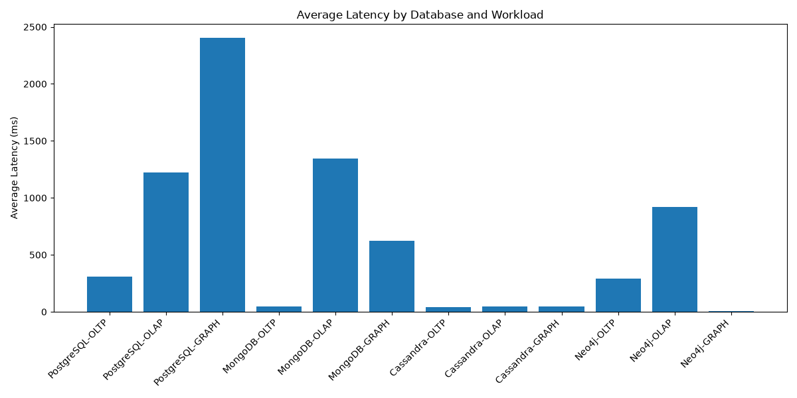
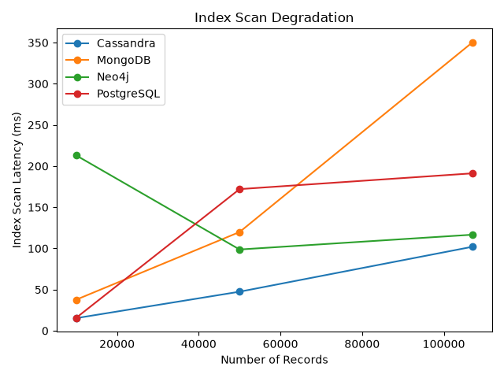

PostgreSQL, MongoDB, Cassandra, and Neo4j, benchmarked against the same 99,441-order Olist e-commerce dataset. All figures below are fetched live from the result files in the GitHub repository on every page load.
| Container | Image | Owner |
|---|---|---|
| group7_postgres | postgres:15 | Sai Srinivas Uppara |
| group7_mongodb | mongo:7.0 | Mounika Boggarapu |
| group7_cassandra | cassandra:4.1 | Alyan Khowaja |
| group7_neo4j | neo4j:5-community | Bhavana Volati |
Each system run alone, no contention. Median and p99 latency (ms), fetched live from each system's *_baseline_results.json in the repository.
Same two query shapes re-run at 10K, 50K, and 107K order volumes per system — fetched live from each system's *_scaling_results.json.
Generated directly by the integration layer (visualization.py) from the full concurrency sweep (1 / 10 / 50 / 100 concurrent clients) across all four systems running simultaneously in resource-matched containers.


max_connections) at concurrency = 100 during the co-scheduled run — a genuine capacity limit surfaced by the benchmark, not a benchmarking error. Full per-concurrency-level numbers are in src/integration/results/raw_results.csv and interference_delta.csv in the repository.
Row share per customer_state partition key in orders_by_state, from hot_partition_check.py. A partition holding more than 30% of rows risks coordinator saturation under high-concurrency writes.